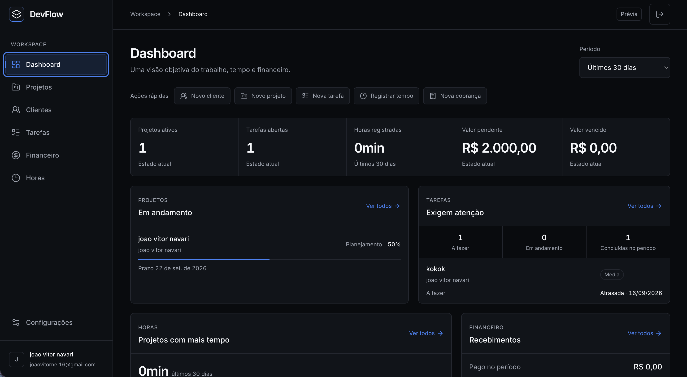

01 / 04Projeto em destaque
Plataforma Full-stack
DevFlow
Em desenvolvimento
Plataforma Full Stack para freelancers gerenciarem clientes, projetos, tarefas, horas e pagamentos em um único ambiente.
Reúne tarefas em Kanban, progresso automático ou manual, registro de horas, cobranças e métricas em um dashboard. Conta com autenticação e sessões, isolamento de dados entre usuários, interface responsiva e portal público seguro para acompanhamento pelo cliente.
- Full Stack
- React
- TypeScript
- Node.js
- PostgreSQL
- Vite
- Express
- Prisma
- TanStack Query
- React Hook Form
- Zod
- dnd-kit
Demonstração ainda não publicada.